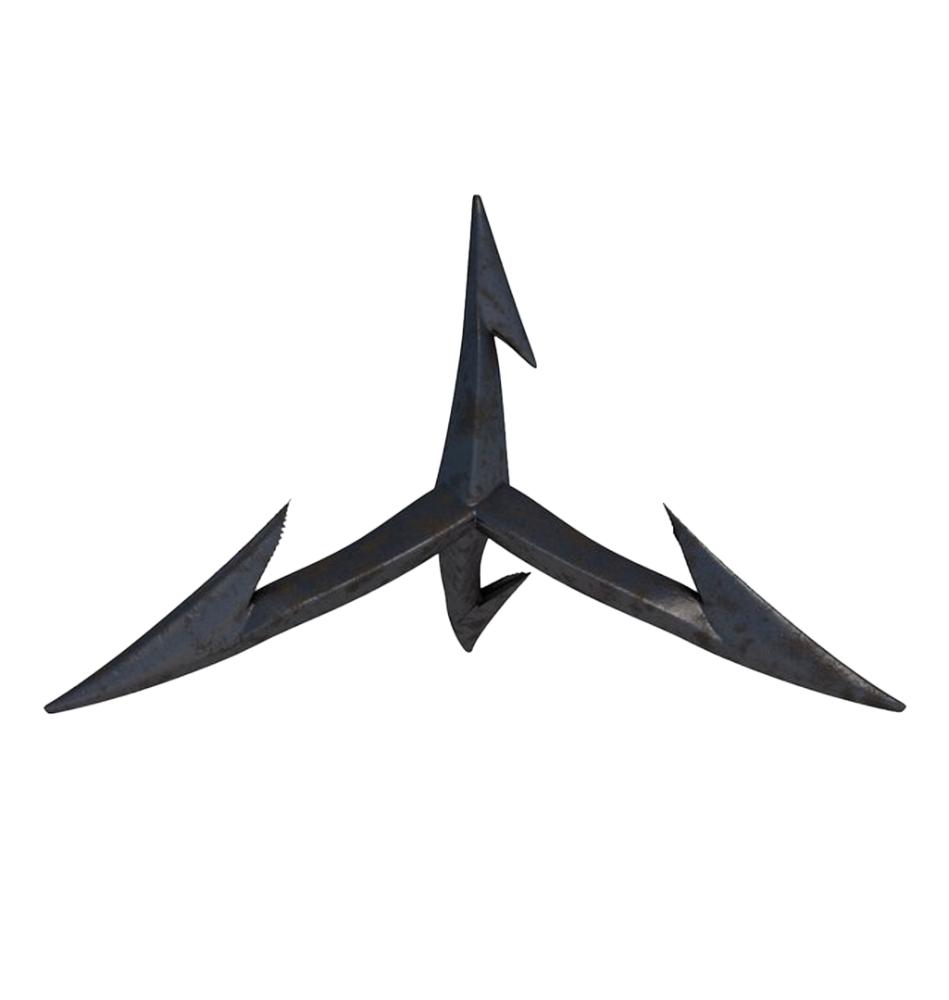
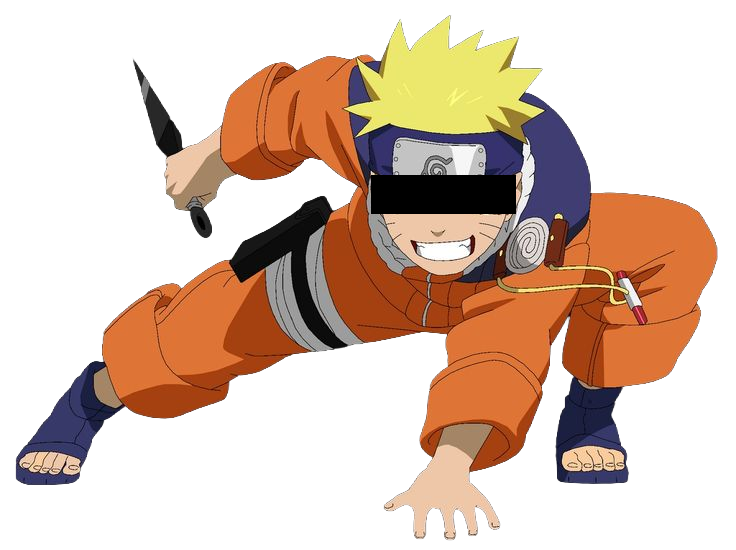
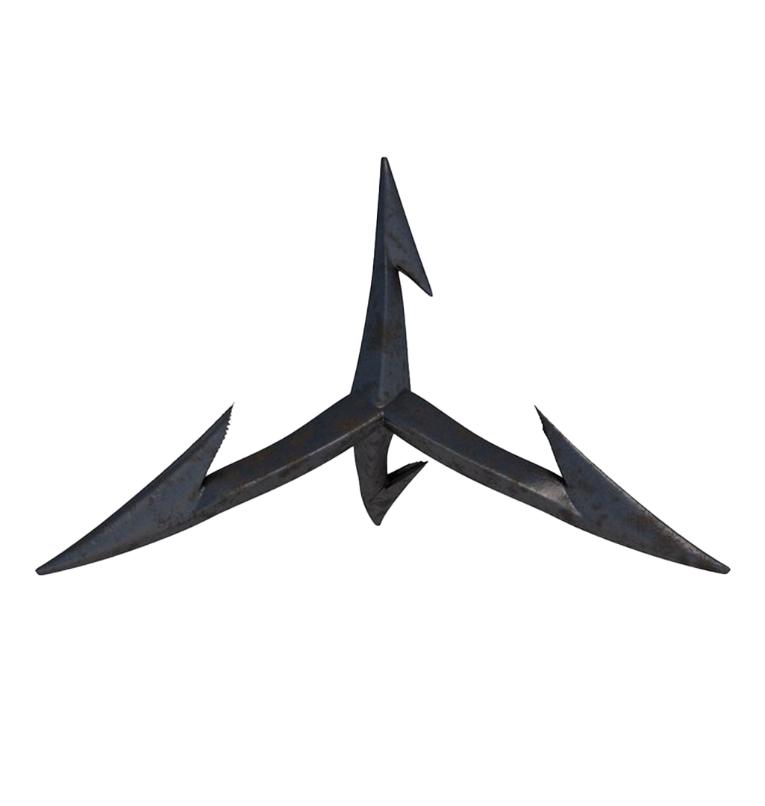
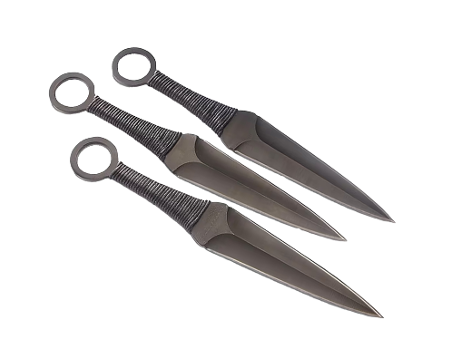
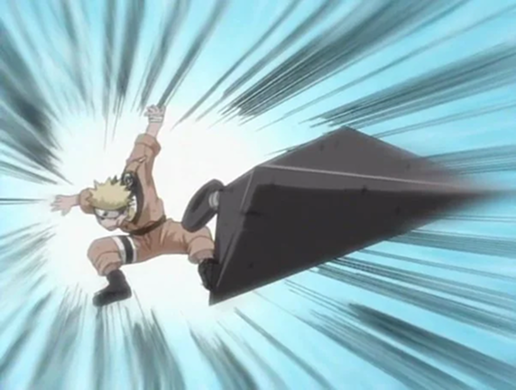
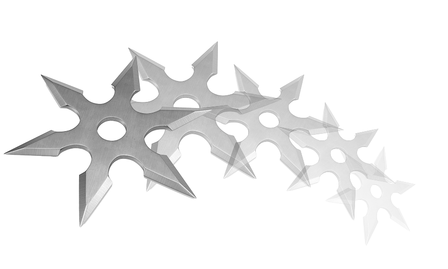
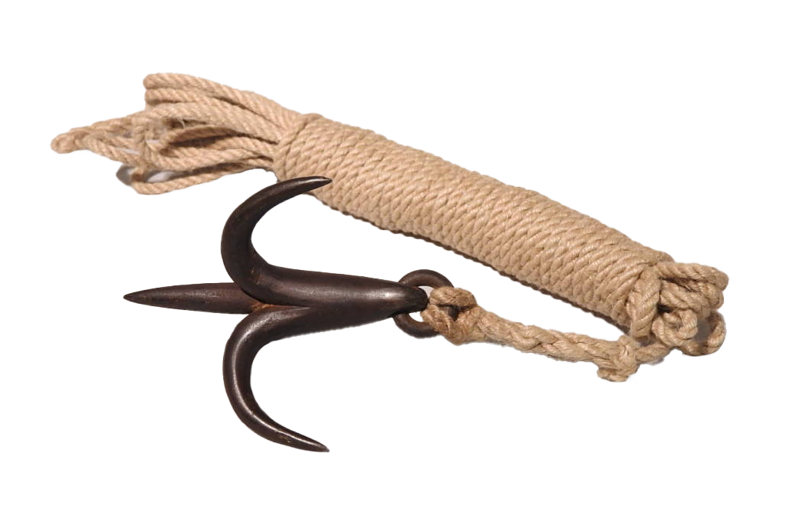
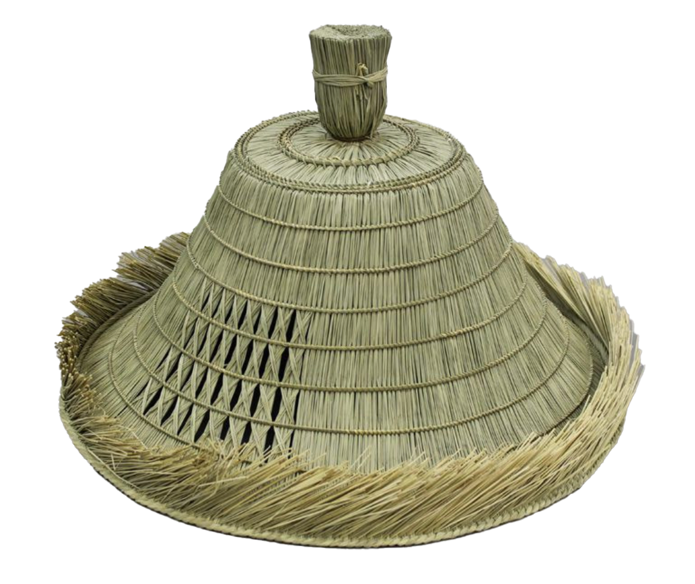
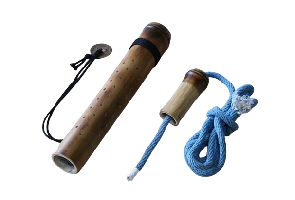

마름쇠 (まきびし)
뾰족한 쇠못으로, 바닥에 뿌려 적의 추격을 막았다. 보통 4개의 가시가 뻗어있는 모습으로, 정사면체의 중심에서 모서리 방향으로 배치된 거라 어떠한 상태로 놓아두어도 한쪽 끝은 위로 향한다. 적이 침범해 올 때에 뿌려두면 발에 찔려 걸어다닐 수 없고, 적의 말굽에도 찔리면 말이 달릴 수 없다.
닌자는 일본 중세 시대에 활약했던 정보 수집·정찰·잠입·교란을 전문으로 하는 첩보원을 말한다. 시노비(忍び) 등으로 불렸으며, 이는 음독으로 읽냐 훈독으로 읽냐의 차이이지 사실 같은 단어이다. “숨다, 참다”라는 뜻의 ‘닌(忍)’에서 유래했다.
닌자의 기원은 헤이안 시대 말기(12세기) 무렵으로 추정되며, 실제 조직화된 닌자 집단은 센고쿠 시대(15~16세기)에 본격적으로 등장했다. 이가(伊賀)와 코가(甲賀) 지역의 닌자들이 특히 유명하며, 이들은 전투보다는 정찰, 잠입, 전략적 정보전을 통해 역사를 뒤에서 움직였다.
오늘날 닌자는 영화·만화·게임 등을 통해 과장되었지만 실제 닌자는 화려한 마법이나 초능력보다 실용적인 기술과 은밀한 움직임을 중시했다.
...돈만 주시면요!
-주로 하는 일은 암살
-인술을 사용함
-표창을 던짐
-닌자 마을에 거주
-눈으로 마법 씀
-변신술 사용
-계급이 존재
...정말 그랬을까?
우리는 흔히 닌자를 어두운 밤에 숨어 다니며 사람을 암살하는 존재로 떠올리지만, 실제 역사 속 닌자는 그렇지 않았다. 닌자의 가장 중요한 임무는 적을 공격하는 것이 아니라 정보를 모으고, 적의 움직임을 알아내어 전투가 유리하게 흘러가도록 돕는 것이었다. 필요하다면 잠입이나 교란 같은 위험한 일을 하기도 했지만, 암살은 닌자의 주업이 아니었고 실제 기록도 많지 않다. 오히려 닌자는 눈에 띄지 않게 움직이며 정찰하고 보고하는 역할에 가까웠다. 즉, 우리가 알고 있는 화려한 암살자는 대부분 영화나 만화 속 이미지이고 실제 닌자는 조용히 정보를 다루는 첩보원에 가까운 존재였다.
역사 속 닌자는 정해진 조직 없이 개인으로 움직이는 존재가 아니었다. 실제로 닌자들은 대부분 특정 집단이나 유파에 소속되어 활동했으며, 이러한 유파는 오랜 세월 동안 축적된 기술과 경험을 바탕으로 자체적인 교육 체계와 규율을 갖추고 있었다. 이 유파들은 지형, 생활 방식, 지역 공동체의 특성에 따라 서로 다른 기술과 전략을 발전시켰고, 구성원들은 어려서부터 잠입, 정찰, 지리 지식, 위장술 같은 실용적인 기술을 단계적으로 익혔다. 닌자들은 이렇게 자신이 속한 유파의 지식을 공유하며, 필요할 때는 외부 세력이나 영주에게 고용되어 임무를 수행했다. 이 때문에 닌자는 떠돌이 암살자가 아니라, 훈련된 기술을 가진 집단의 일원으로 보는 것이 역사적으로 더 정확하다. 유파는 닌자의 정체성과 활동 방식의 핵심 기반이 되었고, 닌자 기술의 전승도 대부분 이러한 조직을 통해 이어졌다.
우리가 흔히 영화에서 보는 닌자의 '인술'은 마치 마법처럼 그려지지만, 실제 역사에서 인술은 초자연적인 힘과는 거리가 멀었다. 인술은 기본적으로 적에게 들키지 않고 움직이며 정보를 얻기 위한 기술의 집합이었다. 여기에는 위장, 기동력, 판단력, 지형 활용, 심리전 같은 매우 현실적인 요소들이 포함되었다. 인술을 담은 서적들 또한 손자병법과 같이 전술, 무술이나 화기운용법 같은 지식이 주된 내용을 이루고 있다. 이러한 지식들은 닌자 활동에 있어 많은 수요가 있었기에 가문과 가문, 또는 개인과 개인 사이로 전수되는 경우가 많았다. 이러한 미스터리한 요소들은 후대 창작자들에게 영감을 불러일으켰고, 지금의 초능력과 같은 형태의 인술로 변화한 것이다.
닌자에도 상급, 중급, 하급 등의 계급이 존재했다. 닌자 또한 조직의 일종이었기에, 사람들을 관리하고 통솔하는 역할이 필요했다. 상급닌자인 죠닌(上忍)은 참모격 인물이었다. 그들이 작전에 직접 투입되는 일은 거의 없었으며, 작전을 지휘하고 계획하는 임무를 맡았다. 그 숫자는 매우 적었으며 닌자라는 신분적 한계에도 불구하고 실질적인 권력은 매우 강해 지방 영주인 다이묘와도 견줄 정도였다. 실존 인물 중에서는 이가닌자 제2대 두령을 역임한 핫토리 마사나리가 죠닌으로 도쿠가와 이에야스 휘하의 최측근 16신장 중 한 명이었다. 그 숫자는 지극히 제한적이기 때문에 각 문파의 두령만 죠닌이었다. 중급닌자인 쥬닌(中忍)은 작전에 직접 투입되어 자신보다 아래 계급에 있는 닌자들을 통솔했다. 나머지는 가장 하위 계급인 게닌(下忍)으로, 닌자 조직의 대부분은 게닌이었다. 많은 닌자들은 평생을 게닌으로 사는 경우가 많았다.
What’s in my bag?

뾰족한 쇠못으로, 바닥에 뿌려 적의 추격을 막았다. 보통 4개의 가시가 뻗어있는 모습으로, 정사면체의 중심에서 모서리 방향으로 배치된 거라 어떠한 상태로 놓아두어도 한쪽 끝은 위로 향한다. 적이 침범해 올 때에 뿌려두면 발에 찔려 걸어다닐 수 없고, 적의 말굽에도 찔리면 말이 달릴 수 없다.
닌자들이 사용한 공구. 크기가 큰 것(13~15cm)과 작은 것(8~10cm)이 있었다. 벽을 오르거나, 벽이나 땅에 구멍을 팔 때 사용했다. 위기상황에서 흉기로 사용되기도 했다.
매체 속 닌자들이 던지는 무기가 바로 이것이다.
재밌는 것은, 쿠나이를 아무리 던져도 적들은 항상 피하기 때문에 타격이 하나도 없다는 것! 진정한 승부는 인술로 가린다.
차륜형 수리검은 바퀴 모양의 수리검으로, 원형의 테두리에 여러 개의 날이 달린 형태를 가지고 있다.
일반적인 별 모양 수리검보다 무게 중심이 안정되어 멀리 던질 수 있으며, 회전력이 강해 적의 무기를 빼앗거나 방어용으로도 사용되었다. 전투보다는 주로 적의 시선을 끌거나 경고의 의미로 던지는 등 심리전의 도구로 쓰이기도 했다.
밧줄 끝에 철제 갈고리가 달린 도구이다. 높고 오르기 힘든 담장이나 절벽 등을 오르는데 사용한다. 철제 갈고리 부분이 원심력을 이용해 던져 걸 수 있게 되어 있어, 벽을 오르거나 강을 건널 때 나무에 걸어 이동하기도 했다. 날카로운 부분은 무기로도 사용되었다.
쌀을 수확하고 남은 볏짚이나 각종 잡초들을 엮은 갓이다. 과거 일본 전국 각지에서 일반적으로 착용하던 복장이었기 때문에 어디에서 쓰고 있어도 의심받지 않았다. 얼굴을 완전히 가리는 모양새로, 잠입할 때 사용됐다. 갓 안쪽에는 적지에서 얻은 정보를 적은 종이를 꿰메거나 비수를 준비해 유사시에 사용했다.
성냥이나 라이터가 없었던 시절, 빠르게 불을 지피기 위한 도구이다. 대나무 통에 작은 통풍구를 뚫어 내부에 산소가 통하게 되어있다. 통 안쪽에는 철선이 세로로 늘어져 있어 부싯돌과 비슷한 원리로 불씨가 생긴다.
닌자는 산이나 강 등지에서 활동해야 하는 경우가 많아 많은 약품을 휴대하고 다녔다. 간단하게는 벌레 퇴치제부처 상처 치료제, 복통 억제제까지 다양했다. 암살 임무에 대비한 독초도 빼놓지 말자.
:상대방의 시각과 청각을 따돌리며 잠입하는 무술의 일종이다. 흔적을 남기지 않고 임무를 완수해야 하는 닌자에게 잠행술은 기본 중의 기본!
변장술 :닌자는 상인, 스님, 농부, 심지어는 다른 성별로 변장하여 임무를 수행했다. 다양한 사람의 모습으로 변장하기 위해선 잡다한 지식을 갖추는 것이 필요했다.
:지형, 주요 인사들의 인간 관계, 성문 개폐시간 등을 파악하여 의뢰를 수행한다. 닌자가 일종의 ‘스파이’인 만큼, 정보를 수집하는 일은 그들의 주요 업무 중 하나였다.
: 미디어에서 굳어진 이미지 때문에 닌자들이 주로 쿠나이 등의 무기를 사용하여 암살을 했다고 생각하기 쉬우나, 그들이 주로 사용하는 방법은 바로 방화였다. 적진에 침입하여 불을 내고, 조용히 빠져나와 큰 피해를 입히는 것이 닌자들의 주된 전술이었다. 화약이 발명된 후에는 폭발물을 적극적으로 활용하였다.
: 닌자들은 독을 주로 상대를 즉시 제압하거나 서서히 약화시키고 혼란을 유발하는 수단으로 사용했으며, 그 방식은 매우 실용적이었다. 무기와 도구 표면에 독을 발라 접촉이나 상처를 통해 투여하거나, 음식·음료에 은밀히 섞어 중독시키고, 연기와가루 형태로 흩뿌려 흡입을 유도하는 식으로 활용됐다.
만천집해(萬川集海)라는 도쿠가와 막부 시절 편찬된 서적에는 닌자들이 주로 사용하는 군사적 지식에 대한 내용이 담겨있는데, 독극물 제조에 대한 내용 또한 포함한다.